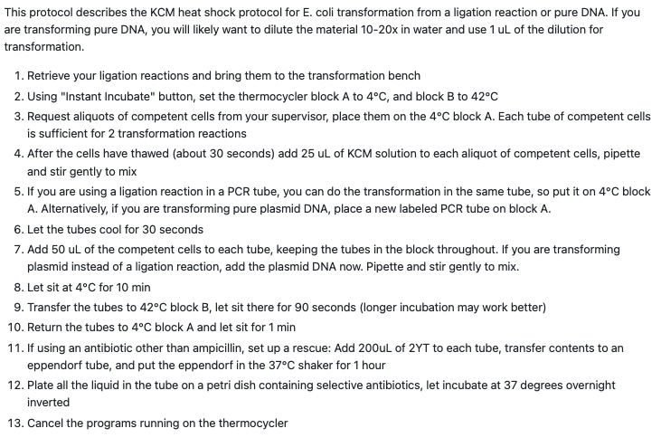

Petri dish


The same protocol, step by step: Transformation tutorial · bench cheatsheet
This protocol describes the KCM heat shock protocol for E. coli transformation from a ligation reaction or pure DNA. If you are transforming pure DNA, you will likely want to dilute the material 10 to 20 times in water and use 1 microlitre of the dilution for transformation. The KCM heat-shock transformation protocol in full, thirteen numbered steps, with links to the same protocol in the tutorials and on the bench cheatsheet.